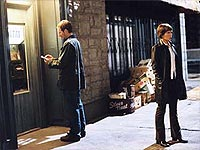

|
Enterprise
Temporada 3

Anlise do episdio por
Salvador Nogueira


|
MANCHETE
DO EPISDIO |
Comentrios: 
E l vamos ns de novo para mais um episdio de viagem no tempo, com
"Carpenter Street". Uma premissa que j foi revisitada de novo e de novo em
Jornada nas Estrelas --o envio de uma tripulao poca do telespectador na Terra-- volta a ser abordada, desta vez dentro do contexto do arco Xindi.
Uma dcada atrs, Rick Berman era o primeiro a vetar histrias com viagens no tempo, em razo da perda de credibilidade que elas ocasionam. C para ns, em 99% dos casos, ele tinha razo. A ironia que agora, emparceirado com Braga, ele o primeiro a embarcar nas ondas radicais das premissas de baguna temporal.
Quem pode acreditar que os Xindis tm tanta dificuldade para destruir a humanidade se eles podem viajar at o incio do sculo 21 e conduzir experimentos malucos com cobaias humanas? Por que no matar todo mundo logo de uma vez? Se eles fossem um pouquinho mais espertos, teriam feito exatamente isso. E, se os roteiristas tambm pensassem nisso, jamais escreveriam histrias como essa.
A temos o primeiro problema do episdio: necessrio suspender a descrena para entender o que os Xindis esto fazendo no passado da Terra. E a necessidade dobra quando temos Daniels recrutando Archer e T'Pol para irem caa dos aliengenas arruaceiros, em vez de enviar uma tropa de policiais temporais do sculo 30. Para qualquer protetor da linha do tempo que se preze, no faz sentido algum ir do sculo 30 ao 22 para buscar outros que possam ento ir at o 21 fazer o servio por eles.
Os personagens tambm no parecem receber nenhum benefcio do episdio. Trata-se apenas de uma pea de ao, com o estilo high-concept to apreciado por Brannon Braga: Archer e T'Pol vo ao passado da Terra para impedir os Xindis de obter informaes para o desenvolvimento de uma arma biolgica contra a humanidade.
O nico personagem convidado digno de nota --Loomis-- nem to digno de nota assim. Apenas mais uma pea numa trama esquecvel, que supostamente deveria ser empolgante.
De toda a pataquada, restam apenas as conseqncias: Archer captura trs Xindis-reptilianos e o equipamento usado no desenvolvimento de uma arma biolgica, e descobrimos que os Xindis no esto to unidos assim no plano de atacar a Terra --h pelo menos duas faces, trabalhando em duas abordagens diferentes. Esse elemento pode render bons frutos para a srie durante o desenvolvimento do arco.
Tirando esses elementos que oferecem pontos de continuidade trama,
"Carpenter Street" um episdio bem esquecvel.
T'Pol - "If Daniels is the time traveler he claims to be, why doesnt he find out for himself?"
("Se Daniels o viajante do tempo que diz ser, por que ele no descobre por si mesmo?")
Archer - "It took him a long while to get permission to interact with me. There are clearances. He said it would take to much time."
("Levou muito tempo para obter permisso para interagir comigo. H liberaes. Ele disse que tomaria muito tempo.")
T'Pol - "I would think he had all the time in the world."
("Eu tendo a crer que ele tinha todo o tempo do mundo.")
 As filmagens de primeira unidade ocorreram entre os dias 10 e 22 de outubro de 2003. Tomadas foram feitas em vrias locaes, como Los Angeles, o cenrio da Paramount para ruas de Nova York, cenrios externos no Lacy Street Production Center e nos sets usuais da NX-01.
As filmagens de primeira unidade ocorreram entre os dias 10 e 22 de outubro de 2003. Tomadas foram feitas em vrias locaes, como Los Angeles, o cenrio da Paramount para ruas de Nova York, cenrios externos no Lacy Street Production Center e nos sets usuais da NX-01.
 Rick Berman disse que Archer e Daniels "se encontram de volta Terra em 2004 caando alguns cientistas/mdicos Xindis-reptilianos que no esto fazendo coisa boa".
Rick Berman disse que Archer e Daniels "se encontram de volta Terra em 2004 caando alguns cientistas/mdicos Xindis-reptilianos que no esto fazendo coisa boa".
 Matt Winston apareceu como Daniels em trs episdios anteriores. Leland orser apareceu em
"The Die is Cast" (Deep Space Nine), como o coronel Romulano Lovok, e em
"Sanctuary" (Deep Space Nine), como Gai. Em "Revulsion"
(Voyager), ele interpretou o Dejaren hologrfico.
Matt Winston apareceu como Daniels em trs episdios anteriores. Leland orser apareceu em
"The Die is Cast" (Deep Space Nine), como o coronel Romulano Lovok, e em
"Sanctuary" (Deep Space Nine), como Gai. Em "Revulsion"
(Voyager), ele interpretou o Dejaren hologrfico.
 A msica do episdio foi composta pelo veterano Dennis McCarthy.
A msica do episdio foi composta pelo veterano Dennis McCarthy.
Escrito por Rick Berman & Brannon Braga
Direo de Mike Vejar
Exibido em 26/11/2003
Produo:
063
Elenco:
Scott
Bakula como Jonathan Archer
Jolene Blalock como
T'Pol
John Billingsley
como Phlox
Anthony Montgomery
como Travis Mayweather
Connor Trinneer como
Charlie 'Trip' Tucker III
Dominic Keating como
Malcolm Reed
Linda Park como Hoshi Sato
Elenco convidado:
Matt Winston como Daniels
Leland Orser como Loomis
Michael Childers como deficiente
Jeffrey Dean Morgan como Xindi-Reptiliano 1
Tom Morga como Xindi-Reptiliano 2
Erin Cummings como prostituta 1
Donna DuPlantier como prostituta 2
Billy Mayo como policial 1
Dan Warner como policial 2